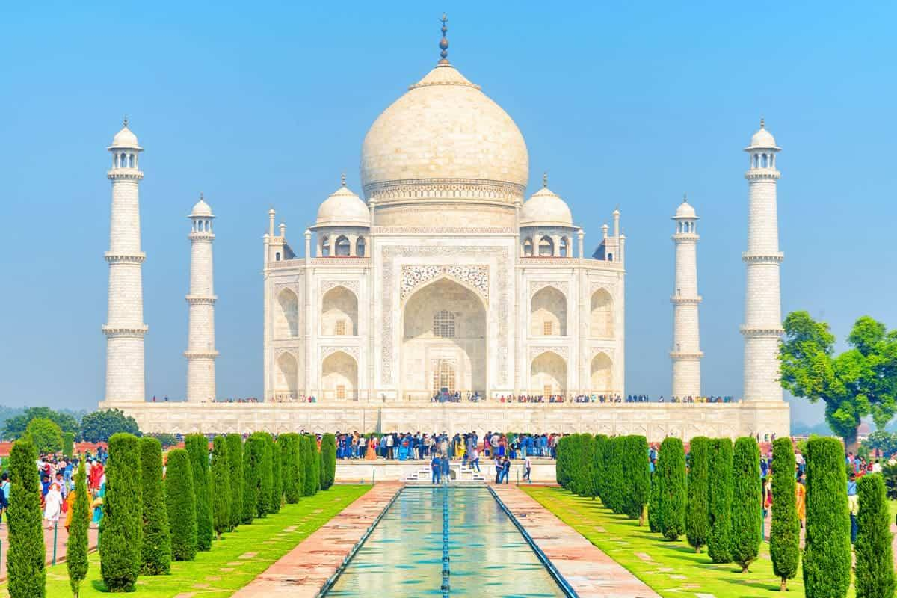

Location: Agra, Uttar Pradesh, India Built: 1632–1653 Built By: Shah Jahan Description: The Taj Mahal is a white marble mausoleum built by Emperor Shah Jahan in memory of his wife, Mumtaz Mahal. It is one of the world's most famous monuments and a symbol of love.